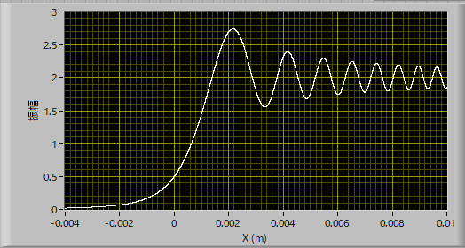
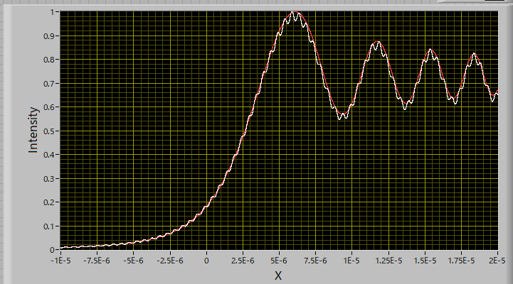

回折-34
ナイフエッジからの回折-34
ナイフエッジからの回折の強度分布は，
\(\Large \begin{eqnarray} I(X)
&=& | u(x) |^2
&=& \left[ C \left( \sqrt{ \frac{2}{ \lambda R}} X \right) + \frac{1}{2} \right] ^2 +i \left[ S \left( \sqrt{ \frac{2}{ \lambda R}} X \right) + \frac{1}{2} \right]^2 \\
\end{eqnarray} \)
となります．実際の波形は，

となります．
これはあくまで近似式であって，
\(\Large R >>x, X \)
の場合のみに成り立つ関係式ですね．
Rをどんどん小さくしていくとどう変化していくか，シミュレートしてみました．
シミュレーションと言っても，PC上で，ひたすら，
ナイフエッジから有限の範囲を細かく刻んで波を発生させる（無限が理想ですが．．．）
さまざまな位相（360度を1,000分割）の波を発生させる
スクリーンのある範囲を細かく区切って，各点での波の合成を計算する
です．
その結果,

となりました．条件は，
ナイフエッジとスクリーンの距離： 0.1 mm
波長 ： 500 nm
ナイフエッジでの波の発生範囲 ： 0～10 mm (10-4 mｍ 刻み)
スクリーン ： -10～20 mm (10-3 mm 刻み）
です．このように，なめらかな波形ではなくなりましたが,ほぼ同じ波形となることがわかります．
ナイフエッジとスクリーンの距離が0.1 mmというのは，波長, 500 nm, に比べたら長いですが，それでも大体再現できるとは驚きですね．